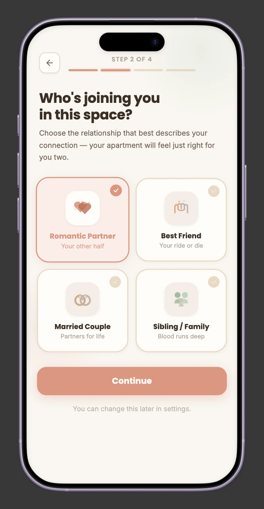
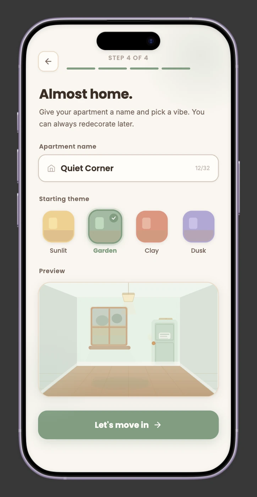
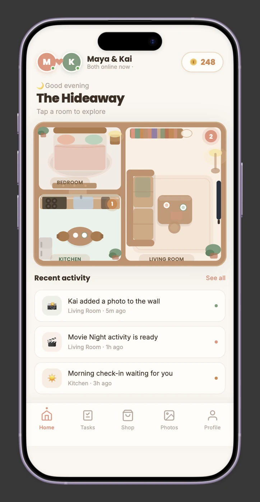
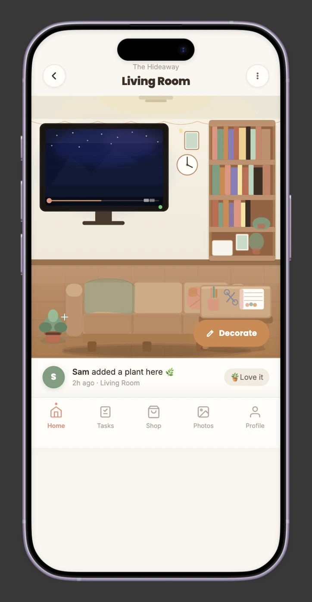
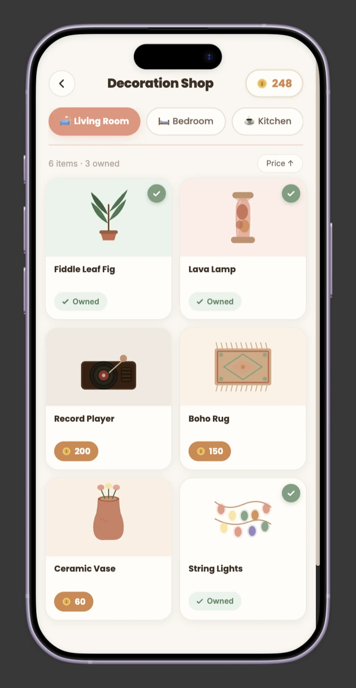

The Problem: Long-distance relationships — romantic, platonic, or family — lose their shared rituals to time zones and the slow fade of novelty, and existing tools don't fit: video calls need scheduling, social media is public, couple apps are either purely romantic or purely functional.
What I Did: Designed a persistent shared space (an apartment) with async-first interactive activities, mapped a full decoration-to-activity system, and worked it through to a functioning prototype.
Headline Outcome: A working prototype demonstrating the full core loop — decorate, activate, maintain, remember — validated as a system before any content or engineering scale-up.
01. The Scene // "The chat thread that goes quiet"
Every long-distance relationship — not just romantic ones — hits the same wall eventually. Time zones make real-time connection genuinely hard to schedule. The novelty of texting and calling fades over months or years apart. And the small rituals that used to hold a relationship together — cooking dinner together, watching a movie, just existing in the same space — quietly disappear without deliberate, effortful planning to replace them.
The tools that exist don't actually fill that gap. Video calls demand full attention and a synced schedule. Social media is public and passive, not private and participatory. Couple apps tend to force a choice: either purely romantic (which excludes best friends, siblings, and spouses going through the exact same distance problem) or purely functional — a shared calendar with no joy in it.
"Issho" — 一緒 — means "together." That's the whole bet: a place, not a thread.
02. What I Actually Did // "Building the system, not just the screens"
Before any screen got designed, this needed a system — one flexible enough to hold romantic partners, best friends, married couples, and siblings without feeling generic to any of them.
- Problem framing: defined the four core failure modes of long-distance connection (time zones, fading novelty, disappearing rituals, ill-fitting tools) as the design brief, rather than starting from "what features should this app have."
- Explicit non-goals: scoped out replacing video/voice calling, becoming a public social network, and supporting large group households for v1 — narrowing the system early instead of letting it sprawl.
- Core system design: apartment → rooms → decorations → activities, where every new decoration is just a new (activity type + content pack) pair — designed so the system scales without needing new mechanics for every addition.
- Relationship-aware content architecture: the same mechanic (e.g., the projector triggers a movie-night pick) produces different content depending on relationship type — a rom-com for a couple, a trending show for friends, a nostalgic rewatch for siblings — same system, different content pack.
- Prototype: built out the core flows — onboarding and pairing, daily use, decoration interaction, task completion, and decorating — as a working prototype to pressure-test the system end to end.
The prototype starts where every pair does — onboarding. Two screens from that flow show how the system's flexibility shows up before a single decoration is placed:


- Low-commitment framing: the relationship screen ends with "You can change this later in settings," which takes pressure off a choice that could feel heavy — especially for pairs whose relationship may evolve.
- Ownership before activity: naming the apartment and choosing a theme gives the pair something that's already theirs at the end of onboarding, before any task or activity asks anything of them.
- One system, four relationship types: the four options are presented as equals in a single grid — no "main" relationship type with the others as add-ons.
03. The Messy Middle // "The async promise almost broke itself"
The entire pitch of Issho is async-first — you shouldn't need to be online at the same time as the other person. But some of the best activity ideas (movie night, a Pictionary-style drawing game) are only really good live. That's a direct contradiction sitting in the middle of the concept, and it surfaced early.
04. The Fix // "The system that holds four relationship types at once"
Every core decision traces back to keeping the system flexible without making it feel generic to any one relationship type.
Shared Apartment & Rooms
Backed by: the need for a persistent "place" instead of a disappearing chat thread. Rooms expand as the relationship "levels up" through use — giving a long-term reason to keep coming back that a chat thread can't offer.
Interactive Decorations & Activities
Backed by: the need to replace vanished rituals (cooking together, movie nights) without requiring deliberate, effortful planning every time. Each decoration is a standing invitation to a small shared moment.
AI-Assisted Trending Content Pipeline
Backed by: the "novelty fades" failure mode — static content packs go stale. Designed a lightweight content-ops process (biweekly refresh cadence) that pulls a rotating set of prompts from what's currently trending, layered on top of an evergreen baseline library that always works — so the app doesn't rely on manually authoring every prompt indefinitely.
Soft, Non-Punishing Neglect Mechanics
Backed by: the emotional stakes of long-distance relationships specifically. A drooping plant or a dusty room, never a lockout or guilt-driven mechanic — the app is meant to lighten the relationship, not add another thing to feel bad about.



- Async-first, made visible: the home feed ("Kai added a photo to the wall," "Movie Night activity is ready," "Morning check-in waiting for you") is built so you can open the app on your own time and immediately see what your partner did and what's waiting for you. Presence ("Both online now") is shown but never required.
- The environment is the navigation: instead of a menu of features, the floor plan and the decorations are how you move through the app. Tap the bookshelf, the TV, the craft table.
- A tight economy loop: coins earned from tasks and activities are spent on room-specific decorations that immediately change the shared space, with a persistent coin balance tying every screen to that loop.
- A warm, calm visual language: a muted terracotta, sage, and cream palette with soft, rounded components, deliberately gentle so the app feels like a cozy place rather than a to-do list.
05. Did It Work? // "The honest scoreboard"
This is a personal concept project, not a shipped product — so I'm not going to dress up engagement metrics that don't exist. What I do have: a system that was deliberately scoped down to an MVP (3 rooms, 4–5 decorations, basic tasks) from a much larger vision, a resolved architectural contradiction (async-first vs. live-activity appeal) that could have quietly broken the whole premise if left unaddressed, and a working prototype that proves the core loop holds together end to end.
06. Behind the Scenes // "Director's Commentary"
07. Souvenirs // "Take one home with you"
Want to inspect the raw materials? Links to be added:
The hardest part of this project wasn't any single screen — it was writing down explicit non-goals early enough to matter. "The decoration/activity system can grow indefinitely" is listed as a real risk in my own planning notes, and it's true: it would have been easy to keep adding rooms and activities forever instead of shipping a coherent v1. Deciding not to build in-app calling was the single highest-leverage design decision in the whole project — it kept Issho focused on being a content and coordination layer instead of competing with tools that already do video well. If I extended this further, the next thing I'd actually test is the neglect-mechanic tone with real long-distance pairs — "encouraging, not guilt-inducing" is easy to state as a principle and much harder to verify without watching someone actually react to a drooping plant.